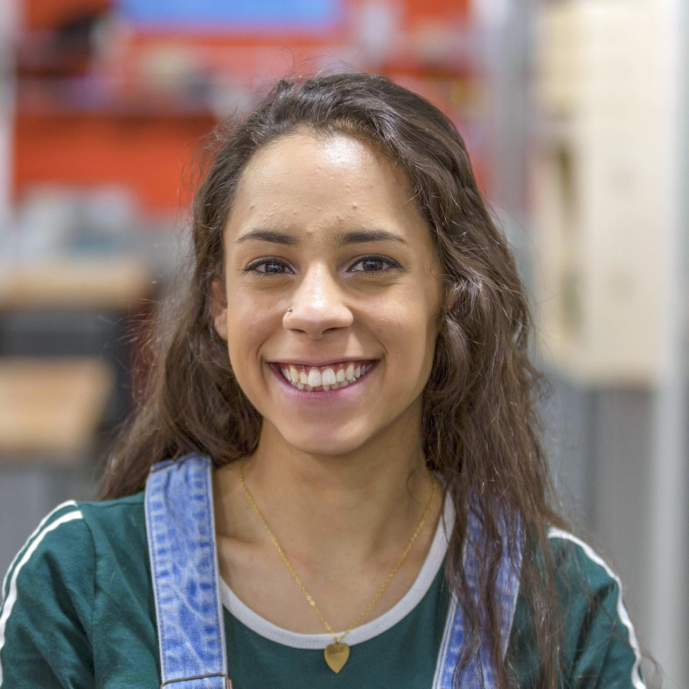

thanks for clicking in!
Welcome 2 me!
I love to make things! Been makin for just about all my life. Someday, I'd like to be a professional maker. Not sure what that looks like but I'm thinking something like Mythbusters, just without a boss or a TV show.
I've worked at BeAM (UNC's makerspaces) for a little over two and a half years, and before that I helped build the first highschool makerspace in the Southern US at my highschool back in Atlanta. Makerspaces are where I realized that I could make a living doing the thing I love most!

This is my dog Milbea. She's a bit of a playa'. I rescued her almost two years ago and she's pretty much my best friend. She loves this whole quarantine thing that's going on because it means she gets butt rubs during every waking moment of our lives
A bit about this website:
link to the site's design specs
I made this website as a final project for my COMP 126 class. I created both the color pallete and font used on here - the font is actually my handwriting. Or, at least part of it. I dont want anyone to think that 100% of my writings are in all caps; they are not. Honestly, I just fw the vibe. My goal is to use this website like a digital portfolio without turning it into anything too serious. I'd like this to contain a record of my projects and maybe even some of the steps I had to take along the way.
some more about me:
My name is Ana (lol tho you probably got that by now). I'm currently a third year here at UNC I am double majoring in applied mathematics and french, and I hope to graduate with a minor in applied sciences and engineering, though I'm not sure if i will have time or not considering it doesn't officially exist. My plan after I graduate is to spend a year or two as an apprentice at a glass blowing studio and then do graduate school somewhere fun, most likely in industrial engineering or product design.